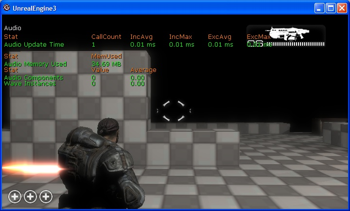
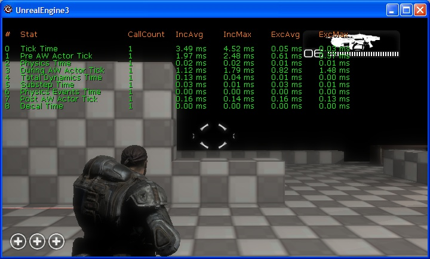
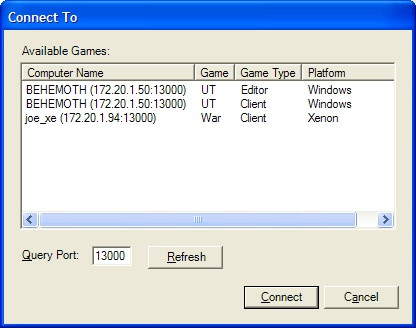
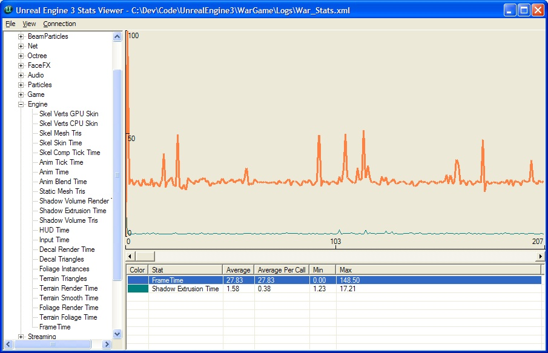
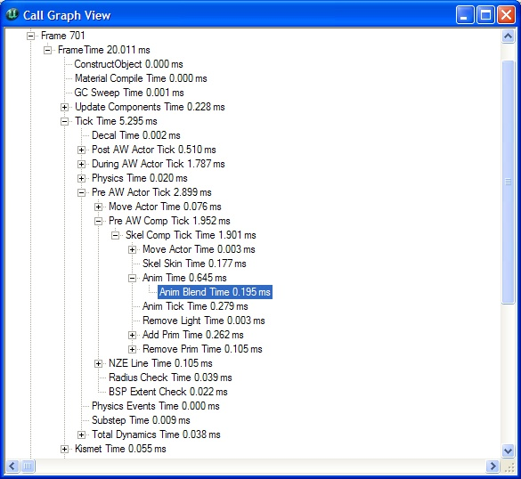

Unreal Engine Performance Tracking System
Overview
This document covers the various mechanisms UE3 has in place for tracking the performance of your game. The data the system provides is meant to help tune your level creation and/or gameplay systems. It can also be used to track performance of levels over time by storing performance information and comparing that over time.
In-game Stats
There are two ways for viewing the performance information: in-game and via an external client. The in-game tools are all invoked using console commands (see the next section) and are displayed on the hud, which has some screen space limitations. If you need to see more stats than what can be rendered then the external client is a better choice.
Stats can be viewed in two different ways: grouped or hierarchically. The old stats system only supported grouped viewing. Groups are set up by a programmer(s) and are shown using the "stat groupname" console command. All stats in that group are then displayed. The screen shot below shows timing only data with both inclusive and exclusive values (see the console command section on how to set it up like that).
Custom stat groups can be created by enabling/disabling the desired groups/stats and using "stat save" command to save the group to a custom name.

The second way to view the stats data is hierarchically. This treats the stats data as a tree structure, where the child stats are included in the parent's total time. For instance, all data is included as part of the stat FrameTime. Viewing stats in this way really helps when you know an area isn't performing well and you need to know which area in particular is the problem. You can keep drilling down through the information until you find the leaf that is consuming the most time. By default, the stats data includes the inclusive timing information. You can also show the exclusive time by using the console command "stat exclusive". This shows the amount of time spent without the inclusion of any child stats. This is an important tool when tracking down which particular part of a scene is causing you performance problems.

What the columns mean
| Column | Meaning |
| # | Used to navigate the stats hierarchy when in hierarchical mode |
| CallCount | Indicates the number of times that stat was updated that frame |
| IncAvg | This is the average inclusive time the stat consumed over the last few frames |
| IncMax | This is the maximum time spent in the stat over the last few frames |
| ExcAvg | The average time, not including child stats, spent in the stat over the last few frames |
| ExcMax | The maximum time spent in the stat, not including children, over the last few frames |
Console Commands
Console commands are how you interact with the stats system in game. The stats system supports a simple set of commands for displaying stats information on the hud in game. All console commands in the stats system start with the "stat" identifier, e.g. "stat engine", which toggles the rendering of the engine stats group. Below is a table showing the console commands that are supported and their purpose.
| Command | Result |
| inclusive | Toggles the inclusive state. If true, inclusive times are shown |
| exclusive | Toggles the exclusive state. If true, exclusive times are shown |
| cycles | Toggles the cycle counter state. If true, cycle counter stats are shown |
| counters | Toggles the counter state. If true, counter stats are shown |
| grouped | Changes the rendering mode to group view mode. Disables rendering if already in grouped mode |
| hier | Changes the rendering mode to hierarchical view mode (call graph mode). Disables rendering if already in hierarchical mode |
| nav "StatNum" | Moves the selection of the current stat up/down the call graph hierarchy |
| color "Item" "Color" | Changes the color the specified item is rendered with |
| list groups | Dumps the names of all of the stat groups to the log. Use showlog to view |
| list group "GroupName" | Dumps the names of all of the stats in the named group to the log. Use showlog to view |
| list list sets | List custom sets that have been saved to GEngineIni |
| save "SetName" | Saves the current stats to a custom stat set in GEngineIni named "SetName" |
| name "StatName" | Toggles the render flag for an individual stat. If true, the stat will be rendered with it's group |
| none | Turns off stat rendering for all groups |
| "GroupName" | Toggles the render flag for that group. If true, that group is rendered. If "GroupName" matches the name of a custom state set, that custom set is enabled. |
Stats Recording
This version of the stats system includes a "stats provider" framework. This framework is used to gather stats data from the game and send that to some form of external storage. At the end of each frame the list of registered providers is given a snapshot of the data. This data can be written to disk, sent across the network, integrated into another API system, etc. Epic provides support for file and networked based recording of per frame stats data.
File Logging of Stats
This version of the stats system support file based recording of stats data. There are two formats that the system can write: CSV for importing into Excel and XML which is used by the stats viewer. The CSV format is good for being able quickly compare results from previous data captures. It also allows you to use all of the features that Excel has for charting and so on. The XML format is primarily used when capturing data for review later. The XML file is in the stats viewer's native format so you can just load an existing XML file into and then view the stats data.
Networked Stats
Also included in the latest version is the ability to gather stats data via the network. This allows you to gather stats data for dedicated servers, which was something we've not been able to do before. It collects the stats via UDP and works across the various OS/consoles that we support. On Xbox 360, stats can also be captured by the PIX tool.
Configuring Stat Recording
Stats providers are enabled via a setting in MyGameEngine.ini. Each provider is given a name and that name is used to check for configuration data in the INI file. For instance, to enable the XML file recording of stats you need to have the following in your Engine.ini file:
[StatNotifyProviders]
XmlStatNotifyProvider=true
Below is the complete list of providers that Epic provides with their default configurations:
[StatNotifyProviders]
XmlStatNotifyProvider=false
CsvStatNotifyProvider=false
StatsNotifyProvider_UDP=true
PIXNamedCounterProvider=false
Stats providers can also be enabled via the command line. This is done by treating the provider name as a parameter:
utgame.exe ons-testmap -CsvStatNotifyProvider
The above turns on comma delimited logging of stats which are written to utgame_stats.csv.
Stats Viewer
The stats viewer is an external application that analyzes and collects performance data. The UI is split into three main areas: the tree view that shows all the of the available groups and the stats that make up the group, the list view that displays aggregate information such as averages and min/max values, and the graph area which displays the stat information as a line graph. Each point on the graph represents the value of that stat for a given frame. The graph can be scrolled forward/backward through the frame data. Along the X axis, the numbers represent either frame numbers or time depending on your user preferences. The Y axis defaults to a range of zero to 100. The scale can be changed on a per stat basis. This is useful for stats that are either always larger than 100 or are very close to zero.
Getting Data
The viewer is used to view existing files that were saved using the file recording (see the previous section on file recording). It is also used to connect to a running game where it collects the stats information via the network. Data harvested via the network can also be saved for later review.
Opening an Existing Stats File
Choose the File | Open menu option and navigate to your game's log directory. All of the stat recording facilities write their files to the game's log directory.
Connecting to a Remote Game
Using the Connect | Connect To menu option brings up the dialog seen below. The dialog broadcasts an announcement message to all games when it is first created. The refresh button re-broadcasts that same message. Both broadcasts happen on the port that is specified in the dialog box. If you have multiple game teams or you want to isolate out a set of servers, you can change which port the game listens on. In order to make connecting easier, the dialog lists the type of game that is running and which platform it's on. In the picture below, I am running the UT version of the editor on my PC, an Onslaught game on my PC, and Gears of War on my Xbox 360. To start collecting stats from a game listed in the dialog, either double-click on the game you want or select it and choose the Connect button.

Viewing the Data
The picture below is an example of opening a file that was saved after collecting a large amount of data via the network. In that view, I have added two counters, FrameTime and SkelCompose, to the graph display. To help differentiate the lines a bit, the selected stat is always drawn with a bold line. The display area is representing 150 frames of data. Each stat has its own color associated with it, which can be changed by double-clicking on the stat in the list below the graph. The background color for the graph is changed the same way. To remove a stat from the display, you select the stat in the list and hit the delete key.

Adding a Stat to the Graph
You add stats to the graph by either dragging an individual stat from the tree view to the graph area or by dragging a group to the graph area. When dragging a group to the graph area, it adds all stats to the display.
Aggregate Data
Aggregate data for the stat is shown in the list view. It shows the average, min, and max value for the stats. By default, those values are for the entire data set, which includes all frames. You can choose to view the aggregate data for only the set of frames being drawn by choosing the View | Ranged Aggregate Data. When viewing by range, the data is updated as you scroll through the set.
Zooming the View Area
X axis scaling is done using the F1 (View | Zoom In) and F2 (View | Zoom Out) keys. This decreases/increases the number of frames plotted on the display. Y axis scaling is done on a per stat basis.
Auto-scrolling During Network Gathering
While connected to a remote game, the graph display automatically scrolls to show the latest data. You can toggle this by using the F3 (View | Auto-scroll Display) key.
Call Graph View
You can view the call graph for any frame by right clicking on that frame in the stats graph area and choosing the "View Frame N" option. This brings up a window that shows the call graph of stats as a tree, as seen below:

Because clicking the exact frame is a bit imprecise, it grabs the frames around where you clicked and adds them to the view too. This also aids with tracking spikes as you can drill down through the stats and get comparisons between the frames. All times are reported as inclusive times.
Known Issues
Doesn't support per thread tracking yet. Doesn't properly handle hierarchical info (grouped processing only)
Future Work
Faster grid painting. It can be smarter.
Hierarchical stats support.
Gameplay markers. These will be items displayed on the graph but come from an API call from gameplay. This is useful for tracking spikes or increases during gameplay/cut scenes.
Bug fixes, ui improvements (grid, mouse over values, etc)
Performance Regression Tests
The stats system includes an application for comparing two separate runs of a performance test. The application, StatsComparison.exe, reads two separate XML files, calculates the aggregate data (average, etc.), and then compares the results with a specific threshold value. If the performance is within that threshold, the test passes (application returns 0). If the performance doesn't fall within the threshold, the application returns 1, meaning the test failed. If it returns a value < 0, it means that there was something wrong with the data, e.g. missing or corrupt file, invalid stat specified, etc.
Important!
You are viewing documentation for the Unreal Development Kit (UDK).
If you are looking for the Unreal Engine 4 documentation, please visit the Unreal Engine 4 Documentation site.